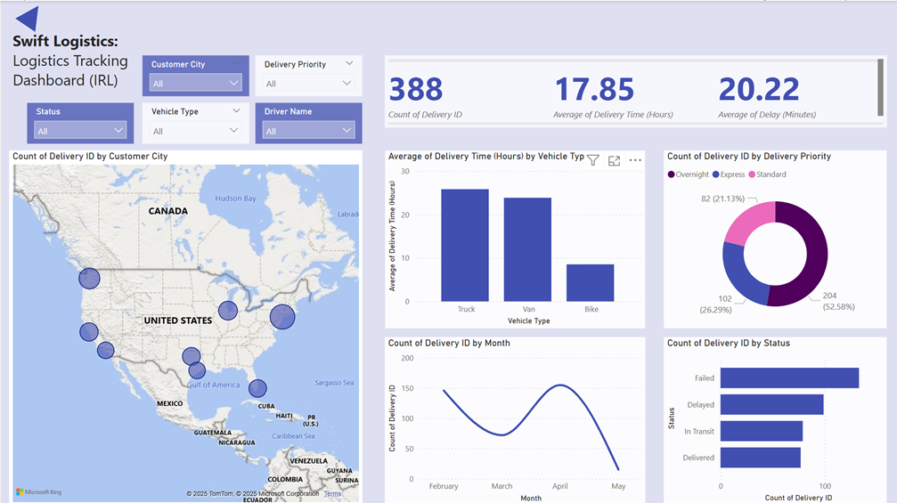

Swift Logistics: Real-Time Logistics Tracking Dashboard (IRL)
As part of my growing portfolio in logistics data analytics, I developed an interactive dashboard for Swift Logistics, designed to monitor and optimize delivery operations across various U.S. and Canadian regions. This project highlights my ability to track KPIs, segment performance by geography and vehicle types, and identify delivery bottlenecks with actionable insights.
Dashboard Purpose
The primary objective of this dashboard is to provide real-time visibility into delivery operations, helping stakeholders assess performance metrics such as delivery time, delay patterns, delivery success rates, and regional efficiency.
Key Metrics
- Total Deliveries: 388
- Average Delivery Time: 17.85 hours
- Average Delay: 20.22 minutes
These KPIs provide a high-level overview of delivery performance and allow for quick benchmarking against service-level agreements (SLAs).
Geographical Insights
Using a map visualization of North America, delivery volumes are plotted by Customer City, revealing clusters of high activity and potential demand zones. This spatial analysis assists logistics planners in route optimization and resource deployment.
Operational Performance
Delivery by Vehicle Type
The bar chart indicates that:
- Trucks average the longest delivery times (~27 hours)
- Vans follow closely with slightly shorter times
- Bikes demonstrate the quickest deliveries, averaging under 10 hours
Delivery Priorities Breakdown
The donut chart shows the distribution of delivery types:
- Standard: 204 deliveries (52.58%)
- Express: 102 deliveries (26.29%)
- Overnight: 82 deliveries (21.13%)
Delivery Timeline
The monthly delivery count line chart illustrates fluctuations in volume, with noticeable peaks in February and April. These insights are vital for anticipating seasonal trends and planning staffing or fleet needs accordingly.
Status Tracking
The bar chart shows the status of deliveries:
- Failed deliveries are the most frequent, indicating areas for operational review
- Delayed, In Transit, and Delivered statuses offer a live snapshot of the delivery pipeline
Tools & Techniques
This dashboard leverages data visualization best practices and interactive filters to create a user-friendly analytics environment. Key techniques include:
- Geospatial mapping for regional trend analysis
- Dynamic KPI cards for quick insights
- Time-series and categorical visualizations for trend monitoring
Conclusion 📌:
This project exemplifies how data can transform logistics operations by providing real-time performance visibility. Through this dashboard, decision-makers can reduce delays, enhance customer satisfaction, and streamline delivery processes. My role involved not just the visual layout, but also the data modeling, filter logic, and storytelling behind the insights..